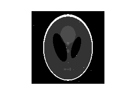
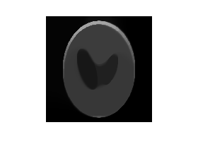

Liam Madden
Homework 8 Problem 3
Contents
Abstract
We add noise to an image and try to recover the original image by constraining the maximum TV semi-norm of the image. We solve for the recovered image using CVX. As you can see in the figures, the recovered image is free of the clear imperfections of the second image. However, it does look blurred compared to the original image.
Clear
clear all close all
Get phantom
Y = phantom('Modified Shepp-Logan',150); N = 150; Y_noisy = Y; for k = 1:N/10 i = randi(N); j = randi(N); Y_noisy(i,j) = Y_noisy(i,j)+rand(1); end
Make discrete gradient operator
B = ones(N,2); B(:,1) = -B(:,1); D = spdiags(B,0:1,N,N); I = spdiags(B(:,2),0,N,N); Lh = kron(D,I); Lv = kron(I,D); L = Lh+sqrt(-1)*Lv;
CVX
tau = 1/4*norm(L*vec(Y_noisy),1); cvx_begin quiet variables X(N^2) cvx_precision high minimize .5*sum_square(X-vec(Y_noisy)) subject to norm(L*X,1) <= tau; X >= 0; X <= 1; cvx_end
Compare
X = reshape(X,[N,N]); figure(1) imshow(Y) figure(2) imshow(Y_noisy) figure(3) imshow(X) 